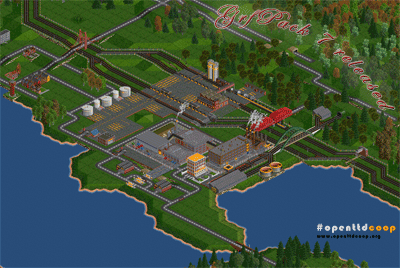

#openttdcoop NewGrf Package Version 7.0 released
We are proud to finally announce the final release of our NewGrf Package Version 7.0. More than 40 changes were applied since the release of the beta. For example the new version of the Canadian Set (v0.3c) is included. 
Check out our logfile or the cia.vc profile. The next release will be a maintenance release (7.1) showing up after a certain amount or some important fixes are done.
To download the package

Download
- zip: Download [Update from 7-beta1 to 7.0] (19MB/4.3MB)
- tar.gz: Download [Update from 7-beta1 to 7.0] (20MB/4.3MB)
- 7z: Download [Update from 7-beta1 to 7.0] (15MB/3.2MB)
Legacy Pack
- zip: Download Legacy Pack (3.4MB)
- tar.gz: Download Legacy Pack (3.5MB)
- 7z: Download Legacy Pack (2.5MB)
Subversion
GrfPack Version 7 is equivalent to r103.
Installing a new tag:
$ mkdir ottdc_grfpack
$ cd ottdc_grfpack
$ svn co http://svn.openttdcoop.org/grfpack/tags/7.0 .
Update
$ cd ottdc_grfpack
$ svn switch http://svn.openttdcoop.org/grfpack/tags/7.0
Alternatively you can also browse the NewGrf Directory.
Categories: Community News, NewGrf
Mucht March 25, 2008 22:29
Yes! Thanks a lot, Ammler and Osai!
alver March 29, 2008 13:46
good day.
Please, tell me, how I can install this GRF pack to OpenTTD? Or where I can read about this action?
thanks.
planetmaker March 29, 2008 23:42
Hi Alver,
as you’ve posted this comment here, you could have seen to the right a link to the #openttdcoop Newgrf package. Follow it and select the download you need. Copy everything in your OpenTTD’s data directory.
alver March 30, 2008 20:15
thanks. it’s work 🙂
very nice work!
VitasLoWang May 9, 2008 19:44
Hello, I have this problem with your package. Please check
http://www.tt-forums.net/viewtopic.php?f=31&t=37516